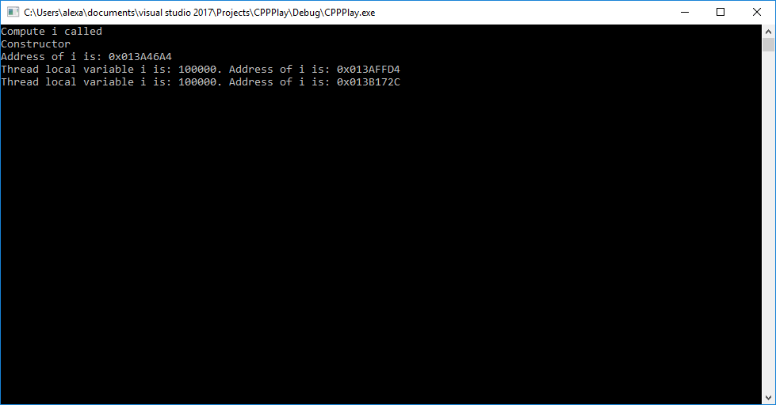

C++ Play - Multithreading
In this post I am planning to build upon C++ 11/14 features introduced in the previous posts and play around with threads and synchronization.
I am going to start with the threading support introduced in the standard library, then move forward to Windows-specific code.
I will use Windows code to exemplify how to build a minimal type-safe threading library using the new C++ 11/14, similar to the standard one.
Unix multithreading and server programming I will probably cover in another post.
C++ standard library and threads
The new C++ standard adds extensive support for thread management as well as a new storage specifier, thread_local (storage specifiers).
Let's start with an interesting piece of code which combines many of these concepts together:
class TestMTLocalStorage {
int i = 0;
public:
// called only once
TestMTLocalStorage(int _i) : i(_i) { cout << "Constructor" << endl; }
// not called
TestMTLocalStorage(const TestMTLocalStorage& t) {
cout << "Copy " << endl;
}
// not called
TestMTLocalStorage() { cout << "default" << endl; } // not called
// not called
TestMTLocalStorage(TestMTLocalStorage&& mv) noexcept { cout << "move" << endl; }
operator int&() { return i; }
// called after exit from main, similar to static variables, only once
~TestMTLocalStorage() noexcept {
cout << "Destructor" << endl;
}
};
int compute_i() {
cout << "Compute i called" << endl;
return 0;
}
void test_multithreading_thread_local() {
thread_local TestMTLocalStorage i = compute_i(); // can be initialized dinamically;
mutex m;
condition_variable cv;
cout << "Address of i is: 0x" << hex << &i << endl;
auto fn = [&m, &cv]() {
{
unique_lock<std::mutex> ul(m);
cv.wait(ul);
}
for (int j = 0; j < 100000; j++)
i++; // some computation;
{
lock_guard<mutex> lck(m);
cout << "Thread local variable i is: " << dec << i
<< ". Address of i is: 0x" << hex << &i << endl;
// different addresses of i;
}
};
thread t1(fn);
thread t2(fn);
cv.notify_all();
t2.join();
t1.join();
}
int main()
{
test_multithreading_thread_local();
return 0;
}
And here is the output:

Thread Local Storage
Running the code we notice the following:
thread_local TestMTLocalStorage i = compute_i()is called as expected. At this moment, the member variableihas the0x013A46A4address.- Within the thread, the computations on
iare independent. Internal variableihas different address in each thread, and different from the initial address on which it was initialized. - No new constructor / destructor is called when entering or exiting the thread.
- Variable
iis only destructed at the end of the code, after exiting main, the destructor being called only once (at least in VC++ 2017).
This lifecycle requires special care when managing dynamically allocated memory within a thread_local class instance.
Threading support library (std)
In the code above we use the following:
- Creating and running threads, using the
std::threadstandard library class. Threads can be instantiated with a lambda and can capture any members. In our case, we capture the synchronization primitivesmandcvby reference. - Thread synchronization in three different scenarios:
A) Having all threads wait until a certain condition is met.
This is done through the following calls:
{
unique_lock<std::mutex> ul(m);
cv.wait(ul);
}
in the waiting threads and then notifying all threads using the same condition variable cv.notify_all();. Important to notice that cv.wait() requires a unique_lock on a mutex in order for the thread to block.
B) Protecting critical sections of code from running in parallel
Using the scoped:
{
lock_guard<mutex> lck(m);
cout << "Thread local variable i is: " << dec << i
<< ". Address of i is: 0x" << hex << &i << endl;
// different addresses of i;
}
the protection being against several threads running cout in parallel and generating garbage output on the console. As we have already seen, i is thread_local and there is no need for synchronization around it.
C) Waiting for several threads to finish before exiting the method
t2.join();
t1.join();
Other interesting concepts from the standard threads library:
recursive_mutex- allows the same thread to lock the mutex several times. Mutex is released when the number of locks matches the number of releases.shared_mutex- mutex that can be used for reader-writer scenarios. Several threads can have shared ownership (read) while only one thread can have exclusive ownership (write).scoped_lock- tries to take ownership of several mutexes.future,promise,async- futures package to facilitate asynchronous programming, without manual management of threads - async example.
But How Do These Work?
While I do believe that the best code is written using higher level abstractions, preferably standard and cross platform, I also believe that it is critical that, at least once, to dive into the details how these abstractions are implemented.
Many times I find myself stepping through library code just to validate my understanding of the concepts behind. I also think that playing around with library-like code is a very good exercise in coding skills.
Libraries should have a very clean and intuitive interface. They should be type-safe and, as much as possible, prevent unintended / wrong usage.
So let's try to build a very simple and incomplete threads library, but with good abstractions. As I am writing this blogpost on a Windows machine, I will use the Windows primitives as the underlying OS API.
Let's start with the usage (interface) - creating and waiting for threads. Comments in the code.
void test_create_threads() {
using namespace std;
// use a windows_handle -> unique wrapper around handle.
// can be passed around but not owned by several objects at the same time;
// only move operations allowed
// function create_thread wraps CreateThread function so that
// it accepts lambdas and various parameters; not just a void*
try {
// create thread should receive a lambda, with a set of type-safe transmitted parameters.
// RAII, so that, in case of exception, everyhing is cleaned up nicely.
windows_handle wh = create_thread([](auto a, auto b, auto c) -> DWORD {
cout << "Hello from windows threads: " << a << " " << b << " " << c << endl;
return EXIT_SUCCESS;
}, 5, 7, "Hello World");
wait_for_all(true, INFINITE, wh);
cout << "Done. " << endl;
}
catch (const win_exception& ex) {
cout << ex.what() << endl;
}
}
Thread synchronization. For now only mutexes with similar usage as in the standard library.
void test_mutexes() {
using namespace std;
// can be shared across processes if name != NULL
mutex_handle mtx = ::CreateMutex(NULL, FALSE, NULL);
auto fn = [&mtx]() -> DWORD {
try{
auto lock = mtx.acquire(); // RAII
cout << "Hello World from Mutexes" << endl;
::Sleep(1000);
}
catch (const win_exception& ex) {
cout << ex.what() << endl;
}
return 0;
};
windows_handle th1 = create_thread(fn);
windows_handle th2 = create_thread(fn);
windows_handle th3 = create_thread(fn);
windows_handle th4 = create_thread(fn);
wait_for_all(true, INFINITE, th1, th2, th3, th4);
}
There are several issues that impede a direct mapping between C++ and the standard Windows API. The Windows API is a plain C API, which uses extensively opaque HANDLEs and void* to pack user data.
Memory management is done manually, resources being allocated and de-allocated through pairs of "Create" / "Release" C APIs. Error management is done through checking return values.
In C++, we expect type safety, RAII and exception handling. Clearly this is an impedance mismatch we need to bridge.
Creating of threads
In Windows, threads are created by calling the CreateThread API.
First challenge is to bridge the function pointer to a lambda and pass the lambda parameters in a typesafe manner through the void* the API provides. As we don't know how many parameters and what types they have, we will use a variadic template
template<typename Fn, typename... Params>windows_handle create_thread(const Fn& f, const Params& ...p) {
auto ts = new __internal_thread_struct<Fn, Params...>(f, p...);
return ::CreateThread(nullptr, 0, __internal_thread_struct<Fn, Params...>::ThreadFunc, ts, 0, 0);
}
The __internal_thread_struct packs the parameters in a void* and then invokes the lambda on the static __internal_thread_struct::ThreadFunc with the right parameters.
static DWORD __stdcall ThreadFunc(void* ptr) {
auto ts = reinterpret_cast<__internal_thread_struct*>(ptr);
DWORD ret = ts->fn();
ptr = nullptr;
delete ts;
return ret;
}
All magic happens in the ts->fn(); call, which is our lambda packed together with its parameters. Here is how this is created:
std::function<DWORD()> fn = nullptr;
__internal_thread_struct(const Fn& f, const Params&... p) {
// this is required so that parameters of type char o[12] like
// constants "Hello World" are transformed in const char*
transform_from_arrays_to_ptrs(f, fwd(p)...);
}
template<typename... ParamsWashed> void transform_from_arrays_to_ptrs(const Fn& f,
const ParamsWashed&... p) {
// here is a trick. in order to be able to keep params... for later,
// we wrap them in a closure in a std::function
fn = [f, p...]()->DWORD{
return f(p...);
};
}
template<typename T> const T& fwd(const T& t) { return t; }
const char* fwd(const char ptr[]) {
// for stack allocated variables copy is needed. except for char[] which are pooled, so it works.
return ptr;
} // for the rest of stack allocated arrays -> error
There are two tricks in this code:
- We pack the parameters, by value, as captures in the
std::function<DWORD()> fn = nullptr; - We cannot send stack-allocated arrays, except if they are strings in which case they are pooled by the compiler. Because of this, we need the
fwdapplied to each parameter.
For each parameter that can be easily copied, it just returns it. Forchar[], it converts them tochar*and then captures the pointer by value. For any otherT[]stack allocated arrays, error as there is no specialization.
I find this as a very nice example of the power of the new C++: variadic templates, typesafety, perfect forwarding. This call is simply beautiful:
fn = [f, p...]()->DWORD{
return f(p...);
};
Mutexes
For mutexes, there are three problems to solve:
- A nice object-oriented interface
- RAII for locking
- Waiting for a set of mutexes
Fixes for each of these problems is exemplified by a code snippet below:
Waiting for all:
Again variadic templates, because we need to pack the list of mutexes to a stack-allocated array which is expected as input for the WaitForAll API call:
template<typename... WindowsHandles> void pack(HANDLE* arr){} // recursion end
template<typename... WindowsHandles> void pack(HANDLE* arr, const windows_handle& wh,
const WindowsHandles&... rest) { // bind to windows_handle type only
*arr = wh;
pack(++arr, rest...);
}
template<typename... WindowsHandles> DWORD wait_for_all(bool wait_all, int millis,
const WindowsHandles&... handles) {
HANDLE arr[sizeof...(handles)];
pack(arr, handles...);
DWORD ret = ::WaitForMultipleObjects(sizeof...(handles), arr , wait_all, millis);
if (ret == WAIT_FAILED)
throw win_exception("Wait failed");
return ret;
}
Nice object oriented interface:
Arguably nice, as aggregation should be preferred to inheritance (which is, in itself, a form of hidden aggregation) and especially given the need to explicitly delete a function from the base class. But it is short and it works:
class windows_handle {
protected:
HANDLE _h = nullptr;
public:
windows_handle(HANDLE h) : _h(h) {}
windows_handle(windows_handle&& other) noexcept{
_h = other._h; other._h = nullptr;
}
virtual ~windows_handle() noexcept {
if (_h != nullptr)
CloseHandle(_h);
_h = nullptr;
}
windows_handle& operator=(windows_handle&& other) {
_h = other._h; other._h = nullptr;
return *this;
}
windows_handle(const windows_handle& uwh) = delete; // no copy constructor
windows_handle operator=(const windows_handle& uwh) & = delete; // no assignment operator
operator HANDLE() const {
return _h;
}
auto wait(DWORD millis = INFINITE) {
return WaitForSingleObject(_h, millis);
}
};
class mutex_handle : public windows_handle {
public:
using windows_handle::windows_handle;
auto acquire(DWORD millis = INFINITE) {
if (windows_handle::wait(millis) != WAIT_OBJECT_0)
throw win_exception("could not acquire mutex");
return scoped_obj([this]() {
::ReleaseMutex(_h);
});
}
auto wait(DWORD millis) = delete;
};
RAII for locking
A basic object which calls a lambda on destruction. No copy semantics, only move. Usage is exemplified in the snippet above, the auto acquire() method of the mutex class.
class scoped_obj {
private:
std::function<void()> fn;
public:
scoped_obj(const std::function<void()> & _fn) : fn(_fn) {}
~scoped_obj() {
if(fn != nullptr)
fn();
}
scoped_obj(scoped_obj&& other) {
fn = other.fn; other.fn = nullptr;
}
scoped_obj& operator=(scoped_obj&& other) {
fn = other.fn; other.fn = nullptr;
return *this;
}
// no copy constructor
scoped_obj (const scoped_obj& uwh) = delete;
// no assignment operator
scoped_obj& operator=(const scoped_obj& uwh) & = delete;
};